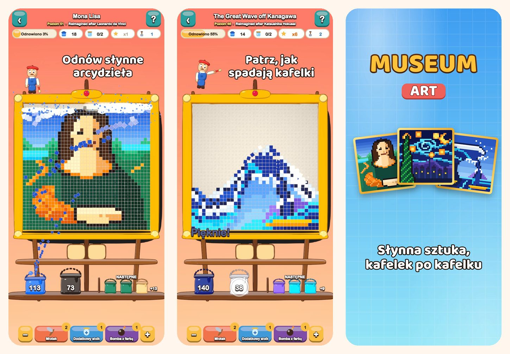

Museum Art
Kolorowa łamigłówka pixel art
Stuknij kolor i patrz, jak spadają kafelki. Odnów 51 obrazów w stylu pixel art, od Mona Lisy po ulice Stambułu, Paryża, Rzymu i Nowego Jorku.
Pobierz w App Store
O grze
Każdy obraz w Museum Art składa się z kolorowych, kwadratowych kafelków. Usuwaj je kolor po kolorze i patrz, jak obraz znów nabiera blasku.
JAK GRAĆ
- Stuknij kolorowy obszar, który dotyka dolnego rzędu, albo wiadro na półce: kafelki lecą do swojego wiadra.
- Kafelki powyżej zsypują się jak piasek i otwierają nowe ruchy.
- Nie ma jeszcze wiadra dla jakiegoś koloru? Odłóż go do słoika na tacy.
- Im rzadziej używasz tacy, tym więcej gwiazdek zdobywasz.
51 OBRAZÓW DO ODNOWIENIA
- Pogodne, łatwe sceny na początek: balon, żaglówka, kot i latarnia morska.
- Przyroda: ośnieżone szczyty, górskie jezioro, kwitnące wiśnie i pustynia o zmierzchu.
- Podróż dookoła świata przez Stambuł, Paryż, Rzym i Nowy Jork.
- Skarbiec Mistrzów: Wielka fala, Gwiaździsta noc, Lilie wodne, Mleczarka, Impresja, wschód słońca i Mona Lisa w nowej odsłonie pixel art.
SPOKOJNIE I UCZCIWIE
- Każdy poziom da się przejść bez wzmocnień, a ponowna próba jest darmowa.
- Wzmocnienia na trudne chwile: Młotek, Dodatkowy słoik i Bomba z farbą.
- Przybliżaj szczegóły, kiedy chcesz.
- Ciekawostka o każdym obrazie.
- Graj w 19 językach.